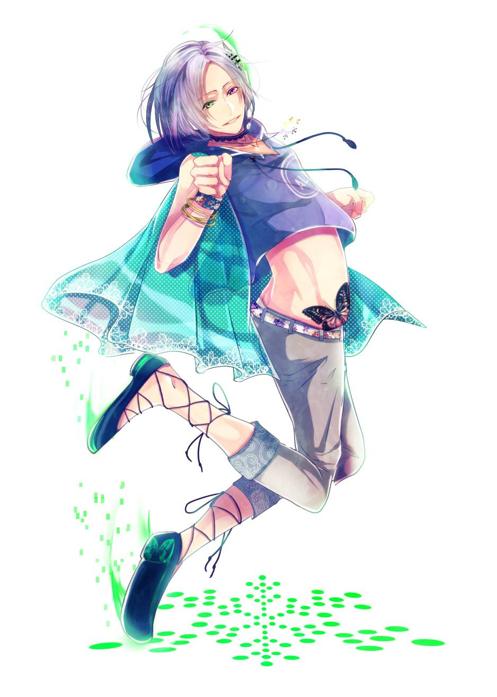
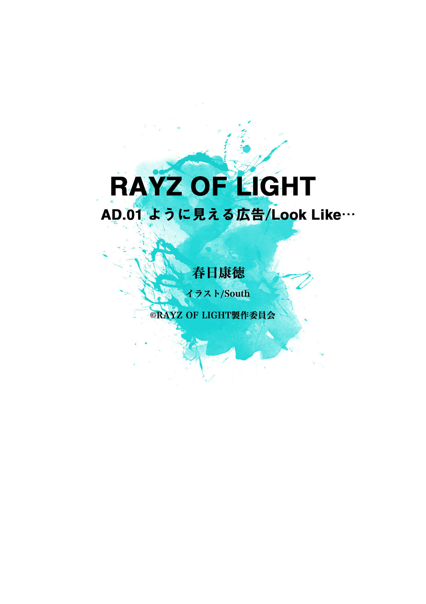
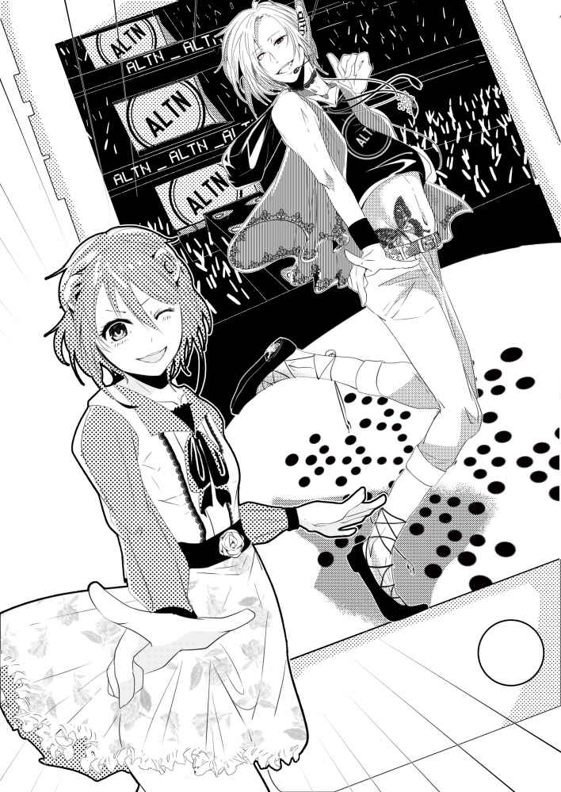
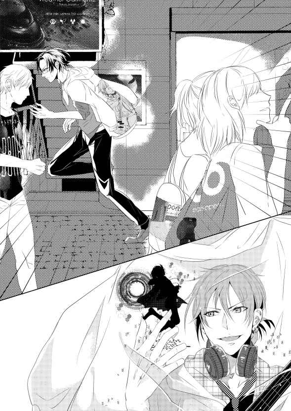
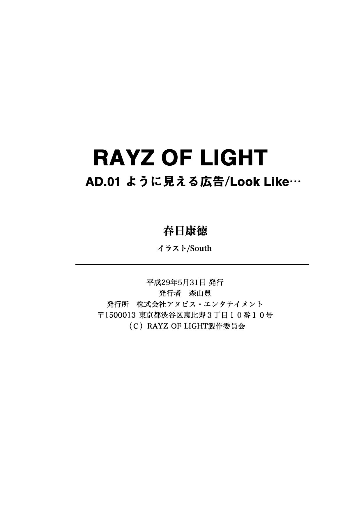

| RAYZ OF LIGHT: AD.01 ように見える広告／Look Like... | |
| 春日康徳 | |
| KABUSIKIGAISYA ANUBISENTATEIMENTO (2017) | |


西暦二〇二五年。
ウェアブルデバイスの発展が
《広告》と《ファッション》のクロスメディアを促し
若者たちが広告を身にまとう時代――――
１
薄暗い事務所内にさっと光が 射 し込む。
お 節 介 な相棒―― 冷 泉 が事務所のカーテンを勢いよく開けたのだ。
「また朝までぶっ通しですか、ラウ？」
まあな、とこたえたラウは、朝日のまぶしさに思わず目を細める。
「うう......頭重てぇ」
昨夜は依頼のあった広告の 解 析 作業で徹夜だったのだ。 溜 まったキャッシュデータをクリアするため、ラウは 豪 快 なあくびを 洩 らす。
「コーヒーでも 淹 れましょう。豆はカサブランカでよろしいですか？」
慣 れた手つきでエプロンを身に着ける冷泉。返事も待たずにキッチンへ向かう。イタリアからわざわざ輸入した業務用のエスプレッソマシンがそこにはあった。ステンレス製の、流線型をした最新モデルだ。ワイシャツの 袖 をまくり、縁無し眼鏡越しに豆を計量する冷泉の姿は、相棒というより有能な 執 事 を思わせる。
そんな相棒の姿を横目に眺めながら、「おっと、また 小 言 をいわれちまうぜ」とつぶやいたラウは、 緩 めていたネクタイをそっと 締 め 直 した。以前、『ロックやってる人間がネクタイなんて 御 免 だぜ』と文句を言ったら、『少しは探偵らしくしてください』と 却 下 されてしまったのだ。
パーカーの下のネクタイを 整 え、足を組んでソファに寄りかかる。すぐにコーヒー豆の香りが室内に広がってきた。つづいてエスプレッソマシンが 稼 働 音を 唸 らせ、エスプレッソを 抽 出 しはじめる――待っている間、ラウは抱えていたベースギターを鼻歌交じりに 爪 弾 いた。
五月も終わりにさしかかり、事務所にはうららかな風が流れ込んでくる。 鮮 やかな 新 緑 が生い 茂 る原宿の並木通りはまぶしいばかりだった。
「お待たせしました」
間もなくして冷泉がカップを運んできた。コーヒーからは湯気が立ちのぼっている。ただちにラウは表情を 曇 らせた。
「おいおい。もう六月になるっていうのに、ホットかよ!? 」
ラウの抗議に対し、冷泉は表情を崩すことなく、「ええ」とこたえる。
「コーヒーの 香り を楽しむのはホットが一番ですから。第一、カサブランカの豆は──」
コーヒーの 薀蓄 がはじまったらかなわない、とばかりにラウは「来客用のコーヒーはそろそろアイスにしたほうがいいんじゃねえか？」と冷泉をさえぎった。
「原宿の人混みにもまれ、事務所についたところに、冷えた一杯のアイスコーヒ！ 依頼者だってそのほうがうれしいと思うけどね？」
「〝依頼者〟に〝来客〟ですか......」
トゲのある声で冷泉が言う。
「なっ、なんだよ、そのなにか言いたそうなオーラは！」
ラウが問いただすと、冷泉は首をすくめ、
「来客がくればいいですけど」と遠い目をしている。
ラウと冷泉は広告トラブルを専門に扱う探偵事務所、その名もそのまま『広告探偵事務所』を経営している。冷泉は相棒にして共同経営者というわけだ。
「仕事は順調にこなしてるだろ」
ラウが主張した。「今朝だってこうして徹夜でクライアントの依頼をこなしてるわけで......」
「二週間もスケジュールがあったのに、 締 め切り直前で作業するからでしょう」
「......う」
冷泉の指摘にラウは言葉を 詰 まらせた。
二の句も 継 げずにいるラウに 畳 みかけるように冷泉は、
「少なくともこの二週間、広告探偵事務所は 閑 古 鳥 が鳴いていますよ」
「......うう」
一言一言がいちいち胸に突き刺さる。
「それに、エスプレッソマシンの手入ればかりしていると、探偵事務所の経営というよりカフェを経営している気分になりますよ―――」
「うぅぅ......でも大丈夫！」
冷泉の 愚 痴 を打ち消すように、ラウは声を張った。
「依頼人は......必ず来る！」
「......？ その 根 拠 は」
呆れた目で冷泉が問うてくる。まったく信用していない。その 瞳 が 如 実 に物語っている。
「......知りたいか？」
「ええ」
ニヤリ。ラウは口元を 緩 めた。
「――名探偵の 勘 ！」
ジャーン！ と四弦ベースを 弾 いて見せたラウは、自信満々に言い切った。
額 に手を当て、頭を振った冷泉は「それで食っていければね」と付け加えることを忘れなかった。
◇
人間らしく振る舞ってはいるが、彼――ソファにふんぞり返ってベースギターを抱えるこの広告探偵は『プログラム人格』だ。
――プログラム人格。
つまり彼はコードの 羅 列 にすぎず、肉体を持たないがゆえの 仮 想 存 在 なのだ。
カーテンを開けることもできなければ、差し出されたコーヒーを飲むこともできない。
現実に存在するものに直接触れることができないのである。
さっきあくびを 洩 らしたのも、あくまでキャッシュをクリアするための動作であって、眠たいからではなかったりする――プログラム人格に睡眠の 概 念 はないからだ。
休 憩 が必要な人間とは 異 なり、プログラム人格のラウは二十四時間三六五日連続 稼 働 しても、ノーミス・ノーエラーで 解 析 作業を実行し、さらにネットに接続すれば瞬時に 膨 大 なデータにアクセスすることができるのだ。
しかし――ラウがそんな超人的なプログラム人格の能力を人前で 披 露 することは、あまりない。
普段は広告探偵事務所で無駄口を叩いたり、ベースギターを 弾 いたり、ネタ広告を 共有 したり......。
正直、仕事しろよと言いたくなるような 勤 務 態度なのである。
その分、誰もいなくなった事務所で一人、ラウは夜な夜なこっそり仕事を片付けるのだ。
まるでこっそり遺跡を守る 小人妖精 のように。
冷 泉 がラウと出会ったのは、三年前のことだ。
大手広告代理店に 勤 めていた冷泉は、ある日、広告プログラムに 誘 導 されて一人のミュージシャンに興味を持った。
ラウドな爆音ギター。
グランジ・オルタナティブなビート！
冷泉はこのミュージシャンの楽曲をもっと聞きたいと思い、リサーチを始めたのだった。
結果、行き着いた真実――冷泉が心 惹 かれたミュージシャンは、プログラム人格だったのだ。
もともとラウは広告プログラムの一種だった。ターゲットユーザーの 趣 味 趣 向 を 解 析 することで、彼らに支持されるヒット曲を自動的に生成するプログラムだ。
『Live Audio Works』。そう命名されたプログラムは、その頭文字をとって『 LAW 』と名付けられていた。
ところが、多くの人に支持されるメロディラインは実は定型化されており、パターン化した組み合わせにすぎない。
なぜ前髪を切りすぎるのか？ なぜ桜が舞い散るのか？ なぜ月を見あげるのか？ なぜ会えなくて会えないのか？ なぜ感謝し、ありがとうと叫びつづけるのか......？
繰り返され、パターン化し、 陳 腐 化した結果、音楽産業は 衰 退 の 兆 しを見せはじめていた。
そこで広告プログラム『 LAW 』が導き出した結論。
音楽を 衰 退 させないために、オリジナリティを 創 発 させる――ヒット曲を自動生成するはずだった『 LAW 』は、いつの間にか 前衛的 ロックを生み出す 唯 一 無 二 の存在に 変 容 していったのだ。
こうして『 LAW 』はコードの 羅 列 から解放された、いわば〝生きた〟プログラム人格となったのだ。
自由意志＝人間の心を 宿 して。
しかし、本来開発された目的はヒット曲を生み出すこと。
難解で 前 衛 的。
ラウドな爆音ギターを 轟 かせることではなかったはずで......。
当然、ラウのオリジナリティは、運用者によって否定され、 抹 消 されようとしていた。
そんなラウの存在が風前の 灯 になっていたとき──冷泉は決意したのだ。
────この男を救う、と。
世界にたったひとつのオリジナリティを 創発 させたプログラム人格。
ラウを。
こうして脱サラした冷泉は、ラウと共に広告専門の探偵事務所を立ち上げることになったのだった。
◇
「『オルタナ社』って......あのオルタナ社か？」
コーヒーの味を楽しみながら――正確に記するならば、ラウはコーヒーを飲むことはできないので、香りや色彩から 測定 することで味覚を 疑 似 体験している――ラウがきき返した。
「はい、あの『オルタナ社』です。ウェアラブルデバイスメーカー 最 王 手 の」
冷泉が 念 押 しの解説を加える。
あれから二週間──。
名探偵の 勘 も 虚 しく、結局、広告探偵事務所を訪れる依頼者はなかった！
しかし、そのまま手をこまねいていては食いっぱぐれてしまう。広告探偵事務所に依頼人が来ないのであれば、営業をかけるしかない。
広告代理店時代のコネを使い倒し、冷泉がようやくとってきたのが〝着る広告〟のウェアラブルデバイスメーカー『オルタナ社』の広告解析業務だった。
裏原 のセレクトショップからのしあがったオルタナ社は、アゲハ 蝶 のロゴマークで知られるブランド・メーカーだ。片方の羽が黒、片方の羽が白のそのロゴは、現実に広告という 副現実 の 代替現実 を重ねて別の世界を 視 るという意味が込められており、社名と共に原宿のポップカルチャーのアイコンとして爆発的に 拡 散 されていったのだった。
広告とファッションのクロスメディアが加速した原宿で、いち早くウェアラブルデバイスの販売に乗り出し、一大帝国を築きあげたオルタナ社。原宿が〝着る広告〟の聖地になっているのは、少なからずオルタナ社の影響もある。
「よくそんな人脈あったな!? 」
感心するようにラウは言う。しがない広告探偵からすれば、着る広告ムーブメントの立役者と取引するなど、夢のような話である。
「大手広告代理店の人脈は 伊達 じゃない、というわけですよ」
「ま、俺の 解 析 能力も、な」
不 承 不 承 、というように冷泉はうなずき、
「それは認めますけど。以前、オルタナ社の創業者 ＫＡＧＥ さんと面識があったものですから」
「はあ!? 」
ラウが 素 っ 頓 狂 な声をあげる。「お前、ＫＡＧＥさんと知り合いなのかよ？」
「知り合いだなんて大げさな......雑誌の対談をセッティングしたことがありまして。以降、ごはんに誘ってもらったりしていて......」
「俺、初耳だぞ、ＫＡＧＥさんとお前が飯 喰 う仲だなんて！」
いまやオルタナ社の創業者ＫＡＧＥ氏は原宿でも伝説的な人物になっている。ラウの驚きも無理はなかった。
「たくさんいらっしゃるお知り合いのひとりですよ、あくまで」
冷泉は 謙 遜 してこたえた。
「で、いつ......いらっしゃるんだ？」
いまさらながら髪やネクタイを整えはじめるラウ。何やってるんですか、と冷泉は 呆 れたように息を吐き出す。
「こんなライブハウス屋上の 掘 っ 立 て小屋に、オルタナ社の社長がくるはずないでしょう。こちらから 赴 くんですよ」
「そりゃそうか」
「じゃ、ちょっと行ってきます」
そう言って冷泉は立ちあがり、ジャケットを 小 脇 に抱えた。
「俺は......どうするんだよ」
ラウがきいた。プログラム人格のラウを構成するコードの 羅 列 ――データは広告探事務所のメインサーバにある。つまり彼は基本的には探偵事務所から外へは出られない。ネットを通じてならどこへでもアクセスすることはできるが――。
「お留守番ですよ」
冷泉は 悪戯 っぽく笑った。「監視カメラをハッキングしたりしないでくださいよ？」
ソファにふんぞり返ったラウは、つまらなそうに口の 端 を曲げた。
「わったよ、おとなしくお留守番してるよ」
鼻歌交じりにベースを 爪 弾 くラウの背中を 一 瞥 し、冷泉は事務所を出ていった。
２
明治通りを渡り、竹下口の交差点で足を止めた。
竹下通りには〝広告を着た〟若者が行き交っている。
Ｔシャツや薄手のパーカーに表示された、いわゆる〝着る広告〟が若者の間に広まったのは、〝着るだけで広告収入が得られる〟という気安さからだった。
しかし、広告を着たまま引きこもっていても、広告収入は得られない。
誰も見ない広告に価値はないからだ。
着る広告は表示させる選択率とその広告に集まった 視線数 によって広告収入が決まる。
では、より多くの人の目に触れるためには......？
そこで人々は広告を着て、原宿に集まった。
いまや原宿は広告とファッションがクロスメディアした最先端の街。海外メディアなどにも度々取りあげられ、外国人観光客の姿もこの街は 珍 しくない。
竹下通りは原宿駅までまっすぐ一本道だが、行き交う人の多さで歩くことすらままならない。アイドルの生写真やクレープ屋、アクセサリー店などが立ち並ぶ通りは十代の若者向け。駅を急ぐ冷泉には、あまり縁のない通りだ。
冷泉はそんな竹下通りの人混みを 避 けるように、人通りの少ない 東 郷 神社の脇道を 迂 回 して駅へと向かった。
改札を抜ける直前、若者で賑わう竹下通りを振り返った。そこには夏の原宿の一大イベント、オルタナ社主催の着る広告の祭典、広告とファッションをクロスメディアさせた『ウェアラブル・フェス２０２５』の広告がよく目についた。。
オルタナ社はフェスの広告宣伝費にいくら 費 やしているのかと心配になるくらいだった。
そんな会社からの広告 解 析 依頼。
いったいどんな依頼内容なのか。
軽いプレッシャーを感じながら冷泉は、駅のホームへ向かっていった。
赤坂に自社ビルを 構 えるオルタナ社・本社の社長室に通された冷泉は、 上級管理職 な雰囲気とはかけ離れた室内に 度 肝 を抜かれた。
宇宙船の 艦橋 に足を踏み入れたような内装の室内には、スニーカーのコレクションやレコード、ＳＦ映画のフィギュアが所狭しと並んでいる。男の子の夢が 凝 縮 されているような 趣 きだった。
「早速だけど、冷泉くんにはこの広告の 解 析 をお願いしたいわけ」
ＫＡＧＥ氏――三十代前半の若き起業家は、経営者というよりヒップホップミュージシャンといった雰囲気だ――は冷泉にタブレット 端 末 を差し出した。
「―― 拝 見 します」
冷泉が受け取った 端 末 には、３ＤＣＧの少年キャラクターが歌い踊るオルタナ社の広告が映っていた。中性的な顔立ちでレースのチョーカーをつけた少年は、妖精のように舞い 踊 る。 鍛 えあげられた 脇 腹 にはオルタナ社のアゲハ 蝶 のタトゥーが入っていて、左右で違う色の 瞳 の色と 相 まって印象深い。低予算で制作されているらしく、キャラクターの動きはぎこちなかったが、頭に残るダンスだった。
オルタナ社ほどの大企業が、なぜこんな低予算の広告を制作したのだろうか？ 広告を 眺 めながら冷泉は頭のなかで思考を走らせる。ハリウッド映画並とまではいかなくとも、オルタナ社だったらもう少し出来のよい映像が制作できるはずで......。
いや、とすぐに冷泉は自分自身の考えを打ち消した。ぎこちないからこそ、記憶に残るのではないか？ そう考えると、ぎこちないなりに 一 生 懸 命 、 踊 っているようにも見えてきて──。
「ユーザーの間でその広告がなんて言われてるか、というとね？」
ＫＡＧＥ氏の声が、冷泉の意識を現実に引き戻した。もう少し顔を近づけろ、というように人差し指で合図する。いぶかる冷泉が顔を寄せると、彼は「何度も広告選択すると、その少年の 踊 りがうまくなっていくように見えるらしいんだ」とささやいた。
冷泉は 一 瞬 、言葉を失った。
「それはつまり......この少年キャラクターに感情移入したユーザーがまことしやかに語っている、ということですか？」
ファンの熱狂が生み出した 妄 想 にちがいない――冷泉が確認するように 問 うた。
「いや......それが実際に成長するらしいんだよね」
参 ったよ、というようにＫＡＧＥ氏は応接用ソファにもたれかかった。
くだんの広告を先程から何度も広告選択しているが、うまくなっていくようには思えない。さっきから同じ映像が繰り返されているに過ぎなかった。
「何度も選択すると成長する広告の謎、ですか......」
冷泉は 顎 に手を当てた。
「その広告をもう一度、ウチで作り直したいんだ」
とＫＡＧＥ氏は奇妙なことを言い放った。「繰り返し広告を選択すればするほど広告の男の子が成長していく。そうしたら、男の子を成長させたくて、ユーザーは何度も何度もウチの広告を選択する」
そうなれば 莫 大 な広告収入がオルタナ社に入ることになる。ＫＡＧＥ氏の意図を読み取った冷泉は、しかし、オルタナ社が作った広告なら、どうして自分たちで作れないのか？ と自問する。すぐに思い当たった推理を冷泉はぶつけてみることにした。
「ひょっとして......担当エンジニアがお 辞 めになったとか？」
「さすが冷泉くん。話が早いね」
ＫＡＧＥ氏はうれしそうに身を乗り出した。「頭いいヤツと話してると、こういうとこいいよね。広告を作ったのはウチの創業メンバーでさ。ウラハラ時代からの付き合いだったんだけど――」
そこでＫＡＧＥ氏は目を 伏 せ、声を落とした。「三ヶ月前から行方不明でね」
「そうだったんですか......」
ＫＡＧＥ氏は気分を変えるように手のひらで 拳 を受け止めた。
「ウチのマーケティングチームが引き継ぎのためにこの三ヶ月、必死に 解 析 してるんだけど、なんで広告が成長するのか全然わかんなくってさ。そこで独立したっていう冷泉くんのことを思いついたわけ」
「ありがとうございます。八月にはフェスがありますからね......だいぶ広告投入しているように見えました」
改札から振り返った竹下通りの着る広告の 賑 わいを、冷泉は呼び起こしていた。大きい看板も着る広告も、オルタナ社のフェス一色といった感じだった。
「そ！ ジャブジャブ使っちゃってるよ、まったく......広告打ってるこっちが嫌になるくらいにさ」
なんと返すべきか迷いつつ、「そいういうもんですか......」と冷泉は話を合わせる。
「でもね？ ユーザーが喜んで何度も広告選択してくれるクールな広告があれば、広告費が浮くってわけだ」
冷泉はビジネスマンの顔になって、「では条件面ですが......」と切り出した。
「 報 酬 は二段階で考えてる」
ＫＡＧＥ氏がいった。「まずは依頼費として五十万。あとは成功報酬として一〇〇万」
経営難の広告探偵事務所にとっては 破 格 の 報 酬 だ。これで二ヶ月は安心だと頭を働かせる冷泉に、ＫＡＧＡ氏は「ただし」と付け加えるように注意を 促 した。
「期限は今日中なんだけど」
「今日中？」
はじめて動揺の色を見せた冷泉をおもしろがるように、ＫＡＧＥ氏は笑う。
「 ＤＯＰＥ ！ マーケティングチームからせっつかれててさ。夏の広告枠を押さえる期限が、今日中ってわけ」
試 すようなＫＡＧＥ氏の視線を、冷泉は受け止めた。大企業のマーケティングチームもお手あげの難題をたった一日で解決できるのか？ いや、解決しなければならない。冷泉は意を決して、
「わかりました。出来る限りのことはさせてもらいます」とこたえた。
「期待してるよ、広告探偵さん」
３
「ひょ、ひょぇぇぇぇぇ！ こ、これオリミーじゃないですかぁぁぁぁ！」
事務員のマコトさんが興奮気味に 叫 んだ。
彼女は原宿の服飾専門学校に通う学生だ。当時女子高校生だった彼女は、ある事件をキッカケに広告探偵事務所で働くことになったのだ。
パターン化・ 陳 腐 化を 回 避 するために自由意志を 創 発 したラウ。そしてすでに二十代後半の冷泉にとって、原宿の若者の間で話題の広告トレンドをマーケティングするのはかなり......むずかしい。やはりユーザーの生の声や肌感覚を知っておきたい。マコトを採用したのには、そういう意図もあった。
「オリミー？ って、オンリーミーってこと？」
ラウがマコトに確認する。
「ちがいます！ 織 宮 ジン！」
一語一語区切って、マコトは 訂 正 する。「オルタナ社のマスコットキャラクターですよ。し、しかも 二次創作 広告じゃない。ってことはこれ、オリジナル広告!? いったいどこで手に入れたんですか！」
二次創作 とは、広告を 複 製 した偽広告のことだ。オルタナ社は現在、このオリミー広告のリニューアルのためにオリジナル版を公開停止にしている。よって原宿に出回っているのは、オリミーの 二次創作 にすぎない。
「やっぱり、マコトさんにはこの少年──」
「オリミーですぅ！」とすかさず重ねてくるマコト。
「......〝オリミー〟ーの 踊 りが上手に見えるんですか？」
「あったりまえじゃないですか」
腰に手を当て、マコトはうんうんと 頷 いた。
「はぁ!? めっちゃ低予算のＣＧじゃねーか。動きもカクカクだし......」
ラウが腕を組んで首をかしげている。
「全然ちがいますぅ！ オリミーはいっぱい練習して、ダンスがうまくなってるんです！」
必死に主張するマコトに対して、ラウは「こりゃ、ただの広告だぞ？」と 半 信 半 疑 の様子。
「ぶぅ！ オリミーは生きてるんですぅ！」
まるで広告表示されている銀髪の美少年── 織 宮 ジンなるアイドルが実在し、彼のダンスがうまくなっていると、マコトさんは本気で信じているような口ぶりだった。
「この少年......オリミーは左右で 瞳 の色がちがうんですね？」
冷泉が画面を指差した。踊りながら印象的な流し目を送ってくるオリミーは右目がグリーン、左目がバイオレットに 滲 んでいる。リズミカルに踊りながら、 淡 く 燐 光 を放つ 瞳 が 強 烈 に頭に残るのだ。
「冷泉さん、さすがです！」
認めてやろう、といういようにマコトがいった。「オリミーは右目で現実を、左目で 副現実 を見つめてるんです！」
「俺はこのビシーッとした右指の確度が気になって仕方ないけどな？」

ラウがオリミーの踊りを指さして言った。
「ラウさんもわかってるじゃないですかあ」
マコトはオリミーと同じようにビシーッと右手でＬの字を形作る。
「オリミーのこの踊りはＬ指ダンスといって、女子高生にも人気なんですよ」
「Ｌ指ダンスだあ？ ホントに 流行 ってんのかよ」
ラウが耳をほじりながら 呆 れた声をあげる。
「えっへん！ なにせマコトちゃんも 踊 れるくらいですから！」
とマコトはラウと冷泉の前でサビの部分──オリミーの印象的な振り付けを 踊 ってみせた。
「マジかよ......」
「というわけでラウ？」
冷泉はメガネを押しあげ、状況を整理した。「僕たち大人が見ているオリミーの広告と、若者には見えるオリミーの広告にはどうやら大きな〝 差 分 〟が存在するようです」
「そのようだな？」
この依頼に対しどう攻めていくか。ラウは四弦ベースを抱えながら考え込んでいる。
「人によって異なる見え方のちがいを証明する......今回もなかなか難しい事件ですね。見え方なんて、その人の頭のなかに入り込まない限り不可能で──」
ジャーン！
ラウのベースが勢いよく 唸 りをあげた。
「いや──できる！」
確信を得たラウに「できるって......見え方のちがいを分析することができるってことですか？」と冷泉は確認する。
「ここは原宿。着る広告の聖地だぞ？ 視線数 を使えばいいのさ！」
まるで絵に描いたように、冷泉はぽんっと手を打った。
「着る広告の広告収入をカウントする 視線数 を 解 析 ツールにしようってわけですか！」
「マコト！ お前の目、 借 りるぞ！」
ラウが言うと、物理現実に触れられない彼に変わって、冷泉がヘッドマウントディスプレイをなかば強制的にマコトにかぶせる。
「ああ、ちょっと！」
ジタバタ 暴 れるマコトの肩に冷泉が後ろから手を置く。
「広告が成長して見えているのは、このなかではマコトさんだけなんですから」
「もう......」
しゅん、とおとなしくなったマコトが「コワイのはイヤですよ？」と念を押す。
「 任 せとけ！ プログラム起動......！ 管理者 権 限 に 基 づきサーバーへのアクセスを 要 請 ！」
ラウが叫ぶと、探偵事務所にいた彼の姿はすっと消えてしまった。ネット空間へダイブしたからだ。
「 要 請 を 受 理 。アクセス権限、 委 譲 します」
探偵事務所でラウをモニタリングする冷泉が、コマンドを打ち込んで、 承 認 プロセスを完了する。
「 視線数 とオリミー広告を 紐 づける。データリンク開始！ 参照波、来るぞ！」
ラウが警告した 途 端 、
「うわぁぁぁぁ......落ちるぅぅぅぅ......!! 」
マコトが絶叫した。
自分の 視線数 データをネット空間に接続させられた彼女のヘッドマウントディスプレイには、ラウと同じ景色が見えている。つまり、上下左右の感覚がない、無限に広がるネット空間にいきなり 放 り投げられたような感覚だ。行き過ぎていく 幾 筋 ものデータの 光 軸 のせいで、マコトは 自由落下 に似た感覚を体験している。
「コワイのイヤだって言ったのにぃぃぃぃ！」
「大丈夫ですよ、見えているのはあくまで視覚的メタファーです」
探偵事務所でパニックになりかけているマコトの背を冷泉が触れた。
「あ、そうですよね」
あっさり納得したマコトがうわあ、と 感 嘆 の声をあげる。「すっごい 没 入 感です......ラウさんがネットにダイブするのって、いつもこんな感覚なんですね......！」
興奮気味のマコトが、突然、黙り込んでしまった。
「............」
「どうしました、マコトさん？」
様子がおかしいので冷泉がきいた。
「うっ......ちょっと吐きそうかも......！」
「ダイブ酔いですね......」
カタカタとキーボードを叩き、ラウの解析を支援するコーディング作業をつづけながら、冷泉が言った。
「ラウ！ マコトさんがもう保ちませんよ！」
「わかった！ 最終シークエンスへ移行。検索結果、出るぞ！」
次の瞬間、ラウがオリミー広告の 解 析 結果を表示させた。
◇
「......広告選択ユーザーの洗脳の可能性は？」
冷泉が 訊 ねた。
探偵事務所には、現実世界に実体化したラウが、いつものようにベースギターを抱え、ソファにふんぞり返って座っている。
短い時間ではあったが、すさまじい頭脳労働をした一同は、冷泉の 淹 れたカフェモカで一息ついているところだった。マコトだけはホイップクリームにチョコレートソースをかけた特別仕様だったが。
「ざっくりオリミー広告を洗った感じでは、その可能性はゼロだな」
解析のプログラムを走らせたラウがこたえた。「それに、オリジナルではない、 二次創作 広告でもオリミーが成長して見えるってことは、オリジナルに含まれるプログラムコードは関係がないということだ」
「じゃあ......オリミーの広告プログラムが、ラウと同じように自由意志を創発した可能性は？」
「それもない、な」
ラウは断定する。「この広告プログラムは 極 めて単純なリピートプログラムだ。人工知能による選択回数に応じたカウントと成長プログラムも確認できない」
いきなり 手 詰 まりだ。
早々に壁にぶち当たり、捜査は 煮 詰 まってしまった。
「それにしても......なんでオルタナ社はいまさらオリミー広告をリバイバルさせたいんですかね？」
カフェモカのカップを両手で大事そうに抱えながら、マコトがなんとはなしにつぶやいた。「だって、オルタナ社って原宿じゃもうオワコンっていうか...... 需 要 ないんじゃないですか？」
意外な意見に冷泉が「えっ、そうなんですか？」と声をあげる。
「そんなことないだろ、おい」
今朝、オルタナ社との仕事に感激していたラウが言った。「天下のオルタナ社だぜ？」
「そうですよ。夏のフェスへ向けて広告だってたくさん打ってる。どこがオワコンなんです？」
ラウに続いて冷泉もマコトに問うた。
「そーゆーとこですよ、冷泉さん」
女心をわかっていない、というようにマコトは指摘した。「昔はたしかにカッコよかったけど、なんか人気アイドルに私服提供してステマしたり、広告あざとすぎて、なんていうか......ちがうよねって。お腹いっぱいっていうか......んー、飽きちゃったんだと思います！ いまはオルタナ社の広告来てても別に『かわいいね』ってなんないし」
「ハッキリいいますね......」
依頼主をクソミソにけなすマコトに冷泉は面食らう。すぐに着る広告のタイムラインを検索する。
「たしかに二、三年前まではウェアラブルデバイスメーカーとして時代の 寵 児 みたいな扱いでしたけど、いまは原宿の若者に支持されているとは言えないようですね？」
原宿のトレンドは日々 移 ろっていく。原宿系と呼ばれるファッションも日々、進化していくということか。原宿の若者の肌感覚は直接聞いてみなければわからないものだ。
「原宿を離れて赤坂にでっかいビル建て始めたころからですよ、感覚ズレはじめたの。それに最近はユーザー広告のほうがカッコイイし！」
マコトは素直な感想を口にした。
ユーザー広告というのは、その名の通り企業ではなく、原宿の若者が考案した〝着る広告〟だ。人気の広告には企業がスポンサードして、さらに広告収入が見込める。若者のなりたい職業にも、着る広告クリエーターがランクインするほどだ。
「確かに近頃では、オルタナ社のロゴをデカデカとプリントしただけのＴシャツが三万円もしたりして、ネットで叩かれていましたね？」
ネット検索すれば、たしかに熱狂的な支持者がいる一方で、原宿のユーザーからは冷ややかな反応が少なくなかった。
「クールなウラハラ発のアパレルメーカーが、大衆に 迎 合 して 陳 腐 化した...... 尖 ってたエッジが丸くなっちまったってわけだ？」
ラウがみんなの所感を整理する。
「広告の大量投入は、若者離れに 焦 っている、ともとれますね？」と冷泉。
「それでウザがられてたら、たしかにたまったもんじゃねーわな。 湯 水 のように使ってる広告宣伝費がぜんぶネガティブな燃料にしかならねーんだからよ」
そういったラウはどこか悲しげだ。一時期、 流 行 った動画投稿も新しいネット世代の登場だともてはやされたが、いまは下火になっている。着る広告だって、いまの時代といつまで 併 走 できるかわかったものではなく────
「ま、 解 析 してもわからないとなったら────」
気分を変えるように言ったラウは、クククッと忍び笑いを 洩 らす。
「いったいどうするんです、ラウ？」と冷泉がきいた。
「たまには探偵らしく、情報を足で 稼 ぐのも悪くないんじゃねーかと思ってな？」
「というと......」
「本人に聞くのが一番手っ取り早いってこった」
「おお!? 聞き込みですね！」
マコトが眼を 輝 かせて言った。
だが、実際に足を動かすのは......冷泉の役目だ。
ラウとマコトの視線を受けた冷泉は、しかたない、というように腰をあげた。
４
五月 下 旬 の原宿は汗ばむような陽気だ。
木 陰 を歩いていても、強い日差しがさんさんと降り注いでいる。
「たしかに、そろそろアイスコーヒーにした方がいいかもしれませんね......」
午後の空に目を細めながら、冷泉は急な坂が入り組む原宿の住宅街をスマホ片手に進んでいた。
「次、右方向な？」
「はいはい......」
スマホに入りこんでいるラウが、 案内役 を務めてくれている。暑さとは 無 縁 のネット空間にいるラウがなんだか 憎 らしく思えてくる。
「しかし、オルタナ社の 凄 腕 プログラマー...... 冬 野 さんはどうしてまた行方不明になったんでしょうか？」
冷泉が言った。「だって、オルタナ社の創業メンバーっていったら、もう株の配当だけで一生暮らしていけるでしょうに。行方不明になる理由がない」
冬 野 昭 仁 。それがオルタナ社創業メンバーで、オリミー広告をつくったプログラマーの名だった。根っからのオタクで人と話すのも 億 劫 だった彼を、ＫＡＧＥ氏がオルタナ社に 誘 った。当時、ウラハラのセレクトショップだった店舗のネット通販サイトの構築や検索対策を任され、着る広告登場後はいち早くその 革 新 性をＫＡＧＥ氏に 説 いたのも冬野氏だとされている。
「ま、金持ちには金持ちの悩みがあるんだろ。冷泉、そろそろ見えてくるはずだぜ？」
次の瞬間、ウラハラの住宅街に、隠れ家的なカフェや美容室が姿をあらわした。初期のオルタナ社は、きっとこんな路地裏にひっそり店を構えているような、そんな雰囲気だったのだろう。
「あれ？ なんの行列だ？」
ラウに言われて、女性が列を作っているのが目に入る。 閑 静 な住宅街に突然、うねるような行列があらわれたのだ。若い女性が多い。
「ベーグル屋さん......のようですね？」
冷泉は店舗前の黒板を 一 瞥 して報告する。「ハワイで 流行 ってるフルーツベーグル......」
「こんな路地裏に店あるのに、行列できてるんだな？ 口コミってやつか？」
ラウが不思議そうに 訊 ねる。
「近隣住民は迷惑そうですけどね」
「お、ここだ！ 到着〜！」
スマホから顔をあげる。冷泉の目の前にあるのは、大企業の 株配当 で 悠 々 自 適 に暮らす創業メンバーの印象とは遠く離れた、 蔦 が 生 い 茂 ったオンボロアパートの姿だった。
「こんなとこに住んでるのかよ......物好きなやつだ」
やれやれとラウが首を振る。
「僕たちの探偵事務所だって、五十歩百歩でしょうが。ま、いってみますか......二〇一号室ってことは二階ですかね？」
踏めば崩れてしまいそうな赤 錆 びた階段をそっとあがり、冷泉たちは二〇一号室前までやってきた。日焼けし、変色したインターフォンを押そうとしたそのとき。
「あんたら、冬野さんのお知り合い？」
階下からの声にはっとして、冷泉が下に顔を出す。
そこには大家さんと思われる 老 婆 がいぶかるような顔でこちらを見あげていた。どうやら階下が大家宅らしい。
「広告探偵事務所の者です。ちょっと冬野さんにお 伺 いしたいことがありまして......」
「冬野さんなら、いないよ」
大家さんの一言に、冷泉は目を見開いた。
「え？ それはどういう......」
「亡くなったんですよ」
「えっ」
急いで階段をくだり、大家さんに話を聞く。
「ご家族もいらっしゃらなかったみたいでね？ 死後二週間ぐらいたってたのかしら？ もうあの部屋は貸し出しできないわよ......」
「会社には連絡されたんですか？」
「会社？」
大家さんは不思議そうにききかえした。
「あの人は万年、Ｔシャツとジャージでフラフラしてるような人で、 勤 め人にはとても見えなかったけどねえ？」
◇
「あのな、ウチはお前たちの問い合わせ照会所じゃないんだぞ？」
原宿署の 袴 田 刑事が両手を組み、不満顔でいった。
冬野氏の死亡を確認するため、冷泉とラウは原宿署へ向かい、二係の高橋警部の元を訪れていた。袴田刑事は高橋警部の部下で、最近二係に配属されたばかりの新米刑事だ。高身長の彼は、とげとげしい表情で冷泉たちを 威 圧 してくる。
「まま、困ったときはお互い様だからさ」
そういって黒い厚紙の 帳 簿 を持ってきた高橋警部は、袴田刑事とは正反対、物腰柔らかな老刑事だ。枯れた中年男性といった雰囲気で、親しみやすい。
「えっと......冬野昭仁。うん、たしかに三ヶ月前に死亡が確認されている。死因は心不全による突然死。遺体発見は 腐 敗 が進んだ二週間後に 階 下 の大家さんが......って、冷泉くんの話と 一 致 するね？」
高橋警部が老眼越しに冷泉を見やる。
「事件性は......」
確認する冷泉に、高橋警部は「ないね！ まったくない！」と即答する。
「まさかオルタナ社の創業メンバーがこんなところで亡くなっていたとはねえ......」
高橋警部がため息をつく。
「職業は......自営業と名乗っていたらしいね？ オルタナ社にもほとんど出社せず、自宅作業しているような人だったようだし......しかし冷泉くん。オルタナ社創業メンバーの冬野氏をよくもまあ探り当てたね？」
高橋警部が 訊 くと、怖い顔をした袴田刑事が「まさか違法捜査じゃないだろうな？」と間の手を入れる。
「〝広告〟を追ったのさ」
手品師が種をバラすようにラウはこたえた。
「なんだ、ラウも一緒だったのか？」
スマホから発せられたラウの声に特に驚きもせず、高橋警部が話しかける。
原宿署二係は 特 殊 詐 欺 を捜査する部署だ。着る広告の聖地となった原宿には広告トラブルが絶えない。だから二係も広告による 詐 欺 被害の捜査活動をしている。
そんな高橋警部は警察の捜査に行き詰まると広告探偵事務所を訪れ、広告の 解 析 業務を 斡 旋 してきうれたりしてくれる。冷泉たちにとってはお得意様なのであった。
「冬野氏は家賃も現金払いだったそうだ」
油断ならないというように、袴田刑事は追及の手を 緩 めない。
「金の記録が残らないようにしていた形跡がある。クレジットカードも使用を 避 けていたようだし、データを追っただけで冬野氏の行方を追うなんてできるはずがない。やっぱり不正アクセスに手を染めたんじゃないのか？」
なおも疑う袴田刑事にラウは、
「〝着る広告〟で冬野氏のアカウントを特定したのさ。投稿された場所のアクセスポイントを解析すれば、そんなモンはすぐにわかるさ」とこたえた。
「............」
違法性はないと誤解が解けたのだろうか。袴田刑事が黙り込んだ。
「しかし、現金払いで足がつかないようにしてたって、犯罪者じゃないんだから――」
冷泉が眼鏡を押しあげながら言った。「どうしてそこまでして身を隠したかったんでしょう？」
居合わせた一同がしばらく考え込んだが、答えはすぐに出そうになかった。
「また壁にぶち当たりましたね......」
そう 洩 らした冷泉の顔に 落 胆 の色があったのか、高橋警部は「なに、めずらしいじゃない？ 苦戦してるの？」ときいてくる。
「ええ、手詰まりってやつです」
冷泉は正直にこたえた。
「広告探偵ラウもお手上げか？」
からかうように袴田が言う。
「別に俺はまだ 音 をあげちゃいねーぜ？」
ラウが応じる。「オッサンたちは聞いたことがあるか？ オリミー広告って」
「オリミー？ あ、オンリーミーってこと？」
高橋警部が言うのを、「警部、ちがいますよ」と 訂 正 したのは袴田だ。
「 織 宮 ジン。オルタナ社のアイドル広告ですよ」
「 詳 しいんですね？」
袴田が知っていたとは意外だった。「どうしてご存知なんです？」と冷泉が 訊 ねた。
「妹がよく 踊 ってるんだよ」
右手でＬの字を形作る袴田刑事を見て、
「Ｌ指ダンスか？」とラウが指摘する。
「そーそ！」
「というか袴田くん、妹いたのかい？」
そっちも意外だ、というように高橋警部がきいた。
「ええ、先日離婚したんで実家に報告にいったら、 踊 ってたもんで」
「ま、というわけだな？ なにか捜査の参考になったかい？」
高橋警部に「ええ、ありがとうございました」と礼を言って、冷泉たちは原宿署を後にした。
５
事務所に戻るともう西日が差し込む時間だった。
徒 労 に終わった捜査にどっと疲れを感じ、コーヒーを 淹 れる意欲も起きずに冷泉は応接ソファにどかっと腰掛けた。
広告解析のタイムリミットは今日まで──なんの手がかりも得られないまま、一日が終わろうとしていた。
「ま、依頼費だけでも五〇万入ってくりゃあ、御の字ってもんじゃねえか」
プログラムで論理構築されているとは思えないラウの適当な意見に、冷泉は「ダメですよ。一度受けた依頼は最後までやり抜かないと」と応じる。
「でもよ、今日の今日！ なんていくらなんでも無理があるぜ......」
時計を見やる。
ここまで空振りが続いていれば、たしかに弱気にもなる。
だが――まだ時間はある。
なんとか捜査の糸口を見つければ、きっと解決できるはずだ── 弛 みはじめた緊張感を義務感と使命感で 結 い 直 した冷泉は、気を取り直してパソコンに向かった。
「冷泉さん、今着る広告のタイムライン眺めてたんですけど......」
マコトに声をかけられ、冷泉はため息をついた。
「あの......マコトさん。ちゃんと仕事してくださいね？」
チクリと嫌味をいう。
「ああ、もう誤解です！ たしかに仕事は進んでませんけど、タイムラインを 眺 めるのもお仕事です！」
結局仕事してないんじゃないか――ツッコミを入れようとした冷泉を制したのはラウの声だった。
「で、要件はなんなんだ？」
「オルタナ社が炎上しちゃってるんです！」
「なに？」
ラウが聞き返すのと同時に、冷泉は着る広告のタイムラインをチェックした。
「オルタナ社がオリミー広告の 二次創作 広告をガイドライン化したんですぅ！」
「それはいったいどういう......」
意味がわからず、ラウが問うた。
「なるほど......公式のオリミー広告をリリースするために、 二次創作 広告を 排 除 するってことですね？ 版 権 使用料を支払ったユーザーにのみライセンスするわけだから......」
冷泉が炎上している理由をまとめる。
「あたしたちが愛していたオリミーは、ユーザーが盛り上げてきたてたわけですよ！ それなのに公式がユーザーの 二次創作 を 潰 すって、ありえなくないですか!? ムキーッ！」
オリミー広告が〝どんどん成長して見える〟のはなぜなのか？
オリミー人気は 二次創作 広告が盛りあがっているから？
それを理解できない、あるいはしようとしないオルタナ社の若者 離 れが加速していて......。
原宿の路地裏で暮らしつづけたプログラマーの不審死。
足がつかないよう現金払いにこだわった冬野氏。
そして、オルタナ社がオリミー広告のオリジナルを真似できない理由──。
点と点が 繋 がりそうなのに、 繋 がらない。
「......ホントに解決できるんですか？ もう夕方ですよ？」
午後五時の退勤時間になったので、マコトは帰り支度を始めている。ユニコーンをあしらった夢かわいいリュックサック――そこにも広告が表示されている――を背負うと、冷泉に向かってぺこりと頭を下げる。
「それじゃ、お疲れ様でしたー」
手を振って玄関へ向かうマコトに、冷泉は「ああ、お疲れ様でした」と応じる。
「気をつけて帰れよ？」
ラウが手を上げて声をかけた。
「はい！ 今日はこれからお友達とケーキ食べ放題です！」
「竹下通りですか？」
冷泉が 訊 ねた。あの人混みに行くのにワクワクしているマコトのバイタリティに 弾 けるような、張りのある若々しさを感じる。
「そうです！ ケーキ、ケーキ！」
浮かれた様子のマコトが足早に出ていった。
「マコトさんは元気ですね。あの竹下通りの人混みに行くなんて、考えただけで疲れてしまいますよ。実は今日も打ち合わせに行くとき――」
ジャーン！ とラウの四弦ベースが鳴り響いた。
「ラウ？ どうしたんですか？」
まさか点が 繋 がった──？
背筋がぞくぞくしながら、冷泉はラウの言葉を待つ。
「冷泉......お前、原宿駅行くのに竹下通り通って行ったほうが直線コースで近いのに、なんで通らなかったんだ？」
なにをわかりきったことを、というように冷泉は「そりゃ、地図上ではそうですけど。あの人混みですからね」
冷泉の言葉を受けて、ラウは真剣に考えを 巡 らせている。
少しでもその思考に追いつきたくて冷泉は、「第一、いい大人がクレープ屋やアイドルの生写真、それにアクセサリー店に用はないでしょう......」と重ねる。
さらにジャーン！ とベースを 弾 くラウ。
「それだよ」
「は？」
「大人には見えなくて、若者には見える広告の正体さ！」
ラウがホログラフのようにポインターを事務所内に表示化して、ハンガーラックにかかっているウェアブルデバイス――パーカーを 指 し 示 した。
「冷泉！ 俺を着ろ！」
「着ろって......」
「解決編のはじまりだ！」
◇
夜の竹下通りは、まさに 電 脳 都市というような未来感に 溢 れていた。
ただし、衣服に広告を表示させた若者が行き交う光景は、どぎついネオンがきらめく ＳＦ映画 の印象とはちがって、ひどくポップで甘ったるい。
若者たちはそれぞれ思い思いの広告を表示させた独特のファッションを 競 い合うかのように、竹下通りを 練 り歩いている。
ラウを広告表示させた冷泉は、 混 雑 する人の波をかき分け、竹下通りをひた走っていた。薄手のパーカーに表示されたラウは、四弦ギターを 奏 でている。
「ラウ！ オリミー広告に変化は!? 」
いい歳をした大人がオリミー広告を表示させながら竹下通りを走るのは、少し 恥 ずかしい。そんな気持ちを吹き飛ばすように、冷泉はさらに速度をあげて、竹下通りを突っ切っていく。

ジャーン！ ラウがベースを 爪 弾 いた。
「やっぱり推理 通 りだぜ！」
冷泉もスマホでオリミーの広告を確認する。さっきまでたどたどしいダンスを披露していた少年――オリミーが、なめらかな広告に 変 容 し始めている。オリミーは左右で異なる 瞳 の色で 怪 しくほほえみながら激しく舞い踊る。その独特の世界観に、アイドルなどまったく興味のない冷泉も思わず引き込まれてしまう。
「これは......僕たちの目が 慣 れた......んではないですよね？」
冷泉が念を押す。
ラウは安心させるように、
「ああ、上書きを確認した」と応える。
「それはつまり......」
「広告表示が可能なウェアラブルデバイスにはＧＰＳが内蔵されてる。位置情報に応じて、〝原宿で遊んでるユーザー〟にしかオリミーの広告の上書きは起こらねー仕様になってるらしいな？」
「原宿で遊んでいる......」
大人には見えない広告の正体。
原宿が好きで好きでしかたがない。
そんな人にしか見えない広告。
冬野氏が見せたかった広告は、つまりそういうことなのか？
大人には見えないもうひとつの 代替現実 。
冷泉の 脳 裡 にあの路地裏で行列をつくっていたベーグル屋の映像が浮かんだ。
若者の口コミ。
オリミー広告のプログラマー、冬野氏が大事にしていたものはそれなんじゃないのか？
大衆化 とはちがう、 先端 さ。
それこそ着る広告の良さだったはず。
広告費を 湯 水 のようにジャブジャブつかったフェス広告はクールじゃない。
まるでそういっているようにも思えて......。
「ＧＰＳ付きの広告端末を誰でも携帯する今だからこそ可能になった広告ってわけですか......」
冷泉が所感をまとめる。
「どうやらプログラマーは移動距離に応じて広告の上書きを行うよう設定していたらしい。オリミーをさらに成長させるためには──」
ラウが言わんとすることは冷泉にもすぐにわかった。
「原宿を 巡 るしかないってことですね」
時計を確認する。ＫＡＧＥ氏に設定されたタイムリミットはあとわずか。
――一時間しかない。
「走るぞ、冷泉！」
６
「君がラウくんかい？」
ＫＡＧＥ氏が腰を 屈 めて、冷泉のパーカーに表示されている広告――広告探偵に声をかける。
「ああ、今日は外出仕様なんでね？」
ラウの 挨 拶 に、ＫＡＧＥ氏は 頬 を 緩 めた。
「まるで『ど根性ガエル』だ」
「よく言われます」
十キロ近く走らせられた冷泉は髪を整えながら苦笑してこたえた。広告 解 析 とは名ばかりの、実に物理的な捜査方法だった。
「さて......じゃ、探偵さんの名推理をお 伺 いしようかな？」
冷泉はオリミー広告の 解 析 結果やプログラマー冬野氏が 孤 独 死 していたことなどを話して聞かせた。若者が行き交う竹下通りを移動する距離に応じて彼は「原宿ユーザー」を定義づけた。
つまり、原宿に 根 ざした広告にこだわったのがオリミー広告だったということだ。
「そうか......」
報告を聞き終えたＫＡＧＡ氏は 感 慨 深 げだった。立ちあがり、六本木や 愛宕 、虎ノ門を見渡せる夜景を見下ろす。そこには原宿の 猥 雑 さとはちがった、区画整理された 上流階級的 でお上品な夜景が広がっている。
「昔は――ウラハラでＴシャツ売ってるころはさ、残業してもツライとは思わなくってさ。創業メンバーみんなそうだったよ。みんな夢見てたから。売上まとめて、伝票整理して、Ｔシャツ 畳 んで......すべてが楽しくてしかたなかった。それがいつからか、原宿のてっぺん上り詰めたあたりから、結果とか数字ばかり求められるようになっちまった」
ＫＡＧＥ氏の回想を、冷泉たちは黙ってきいていた。
「原宿を飛び出して赤坂に本社作ったのも、世界戦略を見越してのこと。ちゃんと考えてるわけ」
そこでＫＡＧＡ氏は苦笑する。「でもね......原宿の人たちはそれを理解してない。原宿のマーケットなんて、たかが知れてるっていうのに......」
大きなため息。ＫＡＧＥ氏はやれやれと首を振った。
「冬野のやつもさ。創業メンバーだっていうのに、世界戦略をまったく理解しない 頑 固 者でさ。原宿から会社移転するって言うときも 強 硬 に反対したんだ」
それ以降、ＫＡＧＥ氏は黙り込んでしまった。
しばらくして、「ありがとう。あとで請求書送っておいてもらえるかな？」といって彼は会見を打ち切った。
◇
タクシーで原宿まで戻ってきた冷泉は、神宮前で降りて夜の表参道を歩いていた。
「なあ、イマイチよく理解できなかったんだが......」
ラウがきいた。「ＫＡＧＥ氏は結局、なにがいいたかったんだ？ 昔はよかったってことか？」
いつも人間らしく振る舞うラウも、プログラム人格であるがゆえに日本人の 機 微 にまでは理解が及ばないらしい。
冷泉はＫＡＧＥ氏を察して、
「つまり、冬野氏は原宿で遊んでないやつには絶対に解けない謎を残すことで、こう伝えたかったんじゃないかってことです」
冷泉は足を止めて竹下口を眺めた。
「お前らには、心がない――――」
しばらく考え込んでからラウは、
「創業時のような〝遊び心〟が、か......」と言った。
「そういえばまだ解けてない謎がありましたよ」
ふっと思い出したように冷泉がきいた。「どうして冬野氏は現金払いで足がつかないようにしていたんでしょう？」
「そんなんわかるわけねーだろ」
ラウの即答だった。
推理 放 棄 か。名探偵が聞いて呆れる......。冷泉はやれやれとため息をついた。
「ま、想像することはできるがな？」
意外なラウの声に冷泉は「たとえば？」と促した。
「ネットの解析だけに頼るヤツに、オリミー広告の謎を解くカギを渡したくなかった、とか」
「赤坂本社の連中のような？」
冷泉がきくと、ラウは 曖 昧 に 頷 いた。
「そういうことだ。あるいは――守りたかったのかもしれない」
ラウの言葉に冷泉は、
「オリミーを、ですか？」と問うた。
「ちげーよ」
わかってねーな、というようにラウは否定する。
「じゃあ、守りたかったってなにを――」
「ここを、だよ」
ラウの視線の先には、若者たちで賑わう竹下通りの 賑 わいがあった。
「エッジの効いた原宿の街を、さ」
「商業という悪魔から、ですか？」
夜になると、オルタナ社のフェス広告は鳴りを 潜 めていた。広告選択数を伸ばすための資本投入はアクティブなユーザーが集中する日中に行われていたからだ。
いま目の前に氾濫する着る広告は、ユーザー広告――原宿の若者たちが思い思いに 創作 した広告の数々だった。
大資本広告ではない、ユーザーの手作り広告。
商業に毒されていない、思い思いの広告の姿がそこにはあった。
冷泉とラウはいつもより時間をかけて事務所に戻っていった。
ＡＤ１･ように見える広告／Look Like...
終わり
